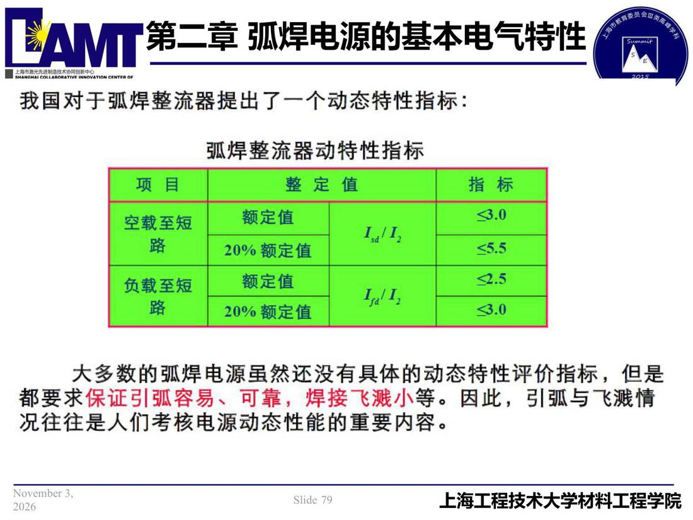

02 第2章 基本电气特性/p079 我国对于弧焊整流器提出了一个动态特性指标
p079 我国对于弧焊整流器提出了一个动态特性指标
📄 原文：📄 弧焊电源 课件（PDF 第 79 页）（幻灯片 79/273；PDF 第 79 页）
我国对于弧焊整流器提出了一个动态特性指标

讲义原文
本页在课件中是纯图文版式（无文字层），内容以页图与下面的 OCR 文本为准。
页面文字（OCR 机读，可能有错字，以页图为准）
我国对于弧焊整流器提出了一个动态特性指标： 项目 弧焊整流器动特性指标 整定值 指标 空载至短 负载至短 额定值 20% 额定值 额定值 20%额定值 大多数的弧焊电源虽然还没有具体的动态特性评价指标，但是 都要求保证引弧容易、可靠，焊接飞溅小等。因此，引弧与飞溅情 况往往是人们考核电源动态性能的重要内容。